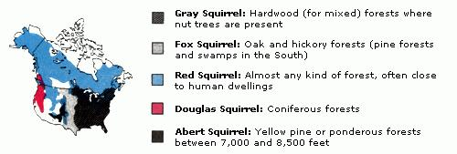
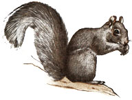
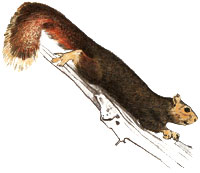
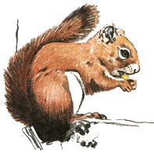
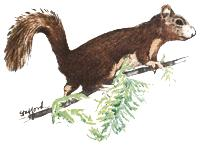
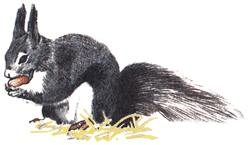

From Mother No. 95
Among both hunters and amateur naturalists, the squirrels (family Sciuridae) make up one of the most popular groups of wild creatures on this continent. These little animals are highly adaptable, and most species have proven able to survive, and even thrive, in areas where human destruction of habitat has long since eliminated less opportunistic mammals. They can be seen dancing limb to limb in city parks and on wilderness hillsides from coast to coast, and-being a very diverse bunch-include not only the tree squirrels, but also such seemingly dissimilar animals as chipmunks, woodchucks (or groundhogs), flying squirrels, prairie dogs, marmots, and ground squirrels.
Still, to most of us, squirrel means one of the bushy-tailed tree dwellers. (In fact, the family name translates as "shade tail.") These are the squirrels most commonly admired by students of nature and most often transformed into tasty meals by hunters.
Whether your chosen activity is observation or pursuit, your success and satisfaction will be increased if you take the time to learn about your quarry. So, to add to the fun you'll find in squirrel watching or hunting, we've prepared the following guide to the more common tree squirrels of North America.
|
 EASTERN GRAY SQUIRREL (Sciurus carolinensis) Adult length and weight: 17 to 20"", 1 to 1-3/4 lb |
 FOX SQUIRREL (Sciurus niger) Adult length and weight: To nearly 30"" and 3 lb |
 RED SQUIRREL (Tamiasciurus hudsonicus) Adult length and weight: Under 16"", about 1/2 lb (average) |
|
 DOUGLAS SQUIRREL (Tamiasciurus douglasii) Adult length and weight: Under 16"", about 1/2 lb |
 ABERT SQUIRREL (Sciurus aberti) Adult length and weight: 18 to 23"", 1-1/2 to 2 lb |
 |